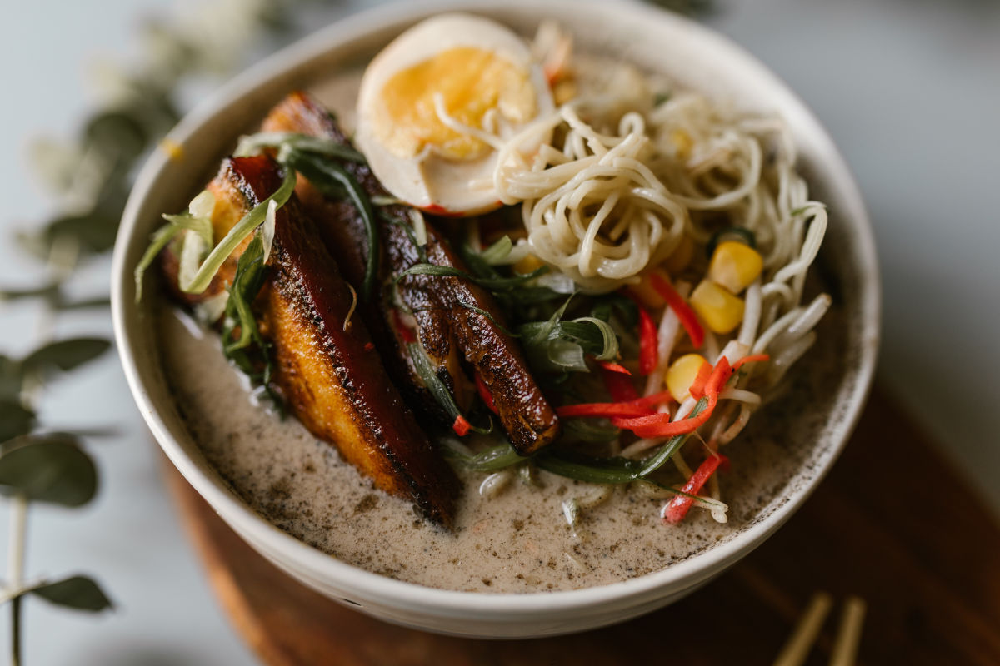

Ramen/Lamen japonês
receita de ramen
INGREDIENTES
- 2 litros de água
- 1/2 xícara (chá) ou 100 ml de caldo de carne de porco
- 600 g de macarrão (ideal o chinês para ramen, ou alguma massa mais fina, como cabelo de anjo)
- 2 colheres (chá) de pó de kombucha (opcional)
- kamaboko (massa de peixe) em fatias a gosto (opcional)
- sal a gosto
- 3 tabletes de caldo de galinha
- 4 colheres (sopa) de molho shoyu
- lombo de porco cozido fatiado
- broto de bambu em conserva (menmas) a gosto (opcional)
- ovos cozidos cortados ao meio, quantidade a gosto (opcional)
MODO DE PREPARO
- Ferva a água em uma panela grande e acrescente o caldo de galinha, o molho de carne de porco, o shoyu, o pó de kombucha e o sal.
- Em seguida, ferva novamente, abaixe o fogo ao máximo possível e prepare o macarrão.
- Em uma panela separada, coloque uma quantia grande de água ferver e acrescente o macarrão.
- Apenas cuide para não ficar muito mole, retire e escoe.
- Divida então o macarrão em 4 tigelas grandes previamente aquecidas.
- Em seguida, cubra o macarrão com a sopa (as tigelas são grandes, mas, caso queira, é só por em pratos convencionais em uma quantia menor).
- Em cada tigela acrescente a metade ou 2 de ovo cozido e o broto de bambu em conserva, procurando pô-los delicadamente no centro da tigela.
- Em seguida, coloque as fatias de arne de porco, de kamaboko e acrescente a pimenta a gosto.
INFORMAÇÕES ADICIONAIS
"O ramen é como uma festa na boca, onde os macarrões fazem a dança e o caldo é o DJ das papilas gustativas!"